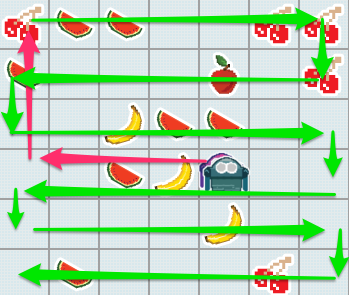

FruitBots
Table of Contents
1 Moving to every square on the board.
- In a previous lesson, you were asked to create an algorithm to go to every square on the board.
- You might very well have come up with a brillian algorithm, but here's one that should work.
1. Move to the origin of the board. 2. Once at the origin. 4. Move in a snake across and down the board.
- The path of the FruitBot is shown below.

Save It
- Save your mybot.js from the last lesson as lesson4bot.js.
- Now save it again as mybot.js
2 Checking we've visited the target.
Code It
- We already have code to move to the origin of the board, so we'll reuse that function.
- Once the bot reaches the origin though, we have to have a way of telling our script that we've been there.
- We can use a flag for this.
var visitedTarget = false; - Add that line to the top of your script.
Learn It
- We need a way to detect that the bot has reached the origin (0,0).
- To do this we can use a conditional. It should look something like this:
if (target has been reached){
visitedTarget = true;
}
- The problem is that the condition target has been reached is actually two conditions.
- The x target has been reached.
- The y target has been reached.
- Testing two conditions in JavaScript is extremely easy. We just need to use the BOOLEAN - AND (
&&) operator. - It would look something like this.
if (target_x has been reached && target_y has been reached){
visitedTarget = true;
}
- In this way,
visitedTargetonly beocmes true if both the x and y targets have been reached simultaneously.
Code It
- Let's use the boolean operator in our code.
function moveToTarget(target_x,target_y){
var my_x = get_my_x();
var my_y = get_my_y();
//Check to see if the target has been reached and set flag.
if (my_x === target_x && my_y === target_y){
visitedTarget = true;
}
else if (my_x < target_x){
return EAST
}
else if (my_x > target_x){
return WEST
}
else if (my_y < target_y){
return SOUTH
}
else if (my_y > target_y){
return NORTH
}
}
- Now we can test the flag in our
make_move()function.
function make_move(){
//Check the flag to see if we've been to the target
if (visitedTarget === false){
return moveToTarget(0,0);
}
}
- Now the FruitBot should move towards the origin, and when it reaches it, the flag will be reset to
true
Try It
- Look back over your old code, from previous lessons.
- Can you make the FruitBot pick up fruit as it moves towards the origin?
- You'll need to get the board, and check to see if there's a fruit each time a move is made.
- *ONLY EDIT THE
make_move()function. - If you get stuck then ask a peer or your teacher for help.
3 Moving in a snake
- We're going to use a new function to move in a snake. It will be called by
make_move()when there is no fruit on the square and when thevisitedTargetflag has been set totrue.
Code It
- We'll start by creating a new flag to determine if we're moving EAST or WEST.
var movingEast = true;- Add that to the top of your script.
Code It
- Let's make a new function. It won't need any parameters.
function moveInSnake(){
//Check if moving
}
Learn It
- Now let's think about the algorithm to move in a snake.
- if the movingEast Flag is true and the bot's not at the far right of the board, then move SOUTH.
- if the movingEast Flag is false and the bot's not at the far left of the board, then move SOUTH.
- if the bot's at the far right or left of the board, then switch the movingEast flag and then move SOUTH
- Look at the game board and work through this algorithm in your head. Remember, movingEast starts off as true.
- Now let's highlight a few key words that might help us with out code.
ifthemovingEastFlag istrueandthe bot'snotat the far right of the board, then move SOUTH.ifthemovingEastFlag isfalseandthe bot'snotat the far left of the board, then move SOUTH.ifthe bot's at the far rightorleft of the board, then switch the movingEast flag and then move SOUTH
- It looks like our code is starting to take form.
Code It
- Let's add in our algorithm as comments to our code.
function moveInSnake(){
//if movingEast is true and not at the far right of the board, then move SOUTH.
//if movingEast is false and not at the far left of the board, then move SOUTH.
//if at far right or left of board, then switch movingEast,then move SOUTH
}
- Now we can fill in the code, but first we need to learn a little bit more about booleans
Learn It
- We've already learned about the AND operator -
&& - There's another operator called the OR operatore -
|| - Like the
&&,||will test two conditions, but it checks if either of them are true, rather than both of them beign true. - Sometimes it's helpful to check if something is NOT EQUAL TO.
- We can test inequality using
!=. - For instance
if (myVar !=0){DO SOMETHING)will test that myVar is not equal to 0 - Sometimes we want to flip a boolean variable, so that true becomes false, or false becomes true.
- To flip a variable we use
myVar = !myVar. So if myVar is true, it becomes false and if it's false it becomes true. - That's a lot of information, but let's put it to use.
Code It
- The first part of our conditional will look like this.
function moveInSnake(){
//if movingEast is true and not at the far right of the board, then move SOUTH.
if (movingEast === true && get_my_x() != WIDTH - 1){
return EAST
}
//if movingEast is false and not at the far left of the board, then move SOUTH.
//if at far right or left of board, then switch movingEast,then move SOUTH
}
Try It
- Can you do the second part.
- It should start with an
else if - The condition should be that movingEast is false and the bot is not at the far left of the board.
- HINT - far left would be when the bot's x position is 0
- Give it a go and ask a peer or your teacher for help if you get stuck.
Try It
- Can you do the last part.
- It should start with an
else if. - The condtion should be that the bot's x position does not equal 0
orit's x position does not equal WIDHT - 1 - If either condition is met then we need to flip the flag
movingEast = !movingEastfirst and thenreturn SOUTH - Give it a go and ask a peer or your teacher for help if you get stuck.
Code It
- Let's call your function and make sure that it works.
- Alter
make_move()so it looks like the code below.
function make_move(){
board = get_board()
//Check the flag to see if we've been to the target
if (visitedTarget === false){
return moveToTarget(0,0);
}
//Take the yummy fruit if it's there
else if (board[get_my_x()][get_my_y()] > 0){
return TAKE
}
//No fruit so let's move like a snake.
else{
return moveInSnake();
}
}
Run It
- Run your code and make sure your bot moves like a snake once it reaches the origin.
- It should pick up fruit on the way.
- It probably won't do the whole board, as it's likely you'll win the game.
- You can comment out the conditional that picks up fruit if you want to see it move through the whole board.
- Check the console if it's not working for errors.
- Ask a peer or your teacher for help if you need it.
Badge It
- Let's change the algortihm a little.
- Alter the target so that the bot goes to the bottom right hand corner of the board first.
- Alter the snake function so that the bot moves in a snake NORTH to the top of the board, then moves WEST one square, then moves SOUTH to the bottom of the board, and one square WEST etc etc etc.